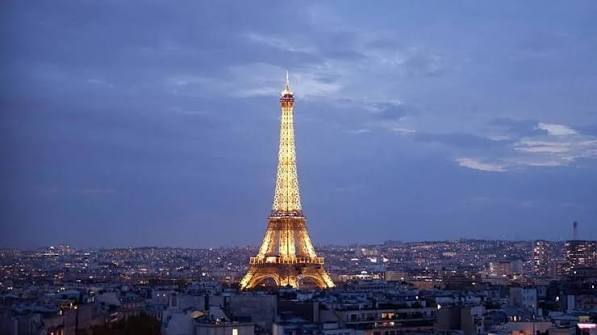
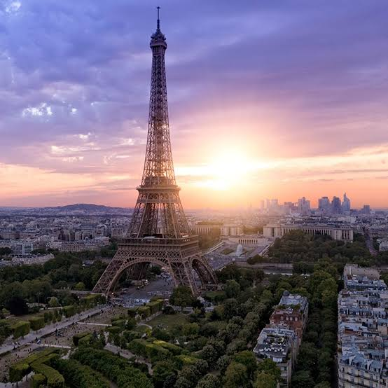

|
 |
IntroducciónLa torre Eiffel es una estructura de hierro pudelado, nombrada ante el ingeniero francés Gustave Eiffel, cuya empresa y sus colaboradores diseñaron y construyeron la torre para la Exposición Universal de 1889 en París (Francia). Ubicada en el extremo del Campo de Marte a la orilla del río Sena, este monumento parisino, símbolo de Francia y de su capital, es la estructura más alta de la ciudad y el monumento turístico más visitado del mundo, con 7,1 millones de turistas cada año. Con una altura de 300 metros, prolongada más tarde con una antena hasta los 324 metros, la torre Eiffel fue la estructura más elevada del mundo durante cuarenta y un años. Es el monumento de pago más visitado del mundo. |
Otros datos de interésFue construida en dos años, dos meses y cinco días, y en su momento generó cierta controversia entre los artistas de la época, que la veían como un «monstruo» de hierro. Tras finalizar su función como parte de las Exposiciones Universales de 1889 y 1900, fue utilizada en pruebas del ejército francés con antenas de comunicación, y hoy en día sirve, además de atractivo turístico, como emisora de programas radiofónicos y televisivos. El 15 de marzo de 2022 se sustituyó la antena de radio con la ayuda de un helicóptero, pasando de 324 a 330 m de altura total. |
 |